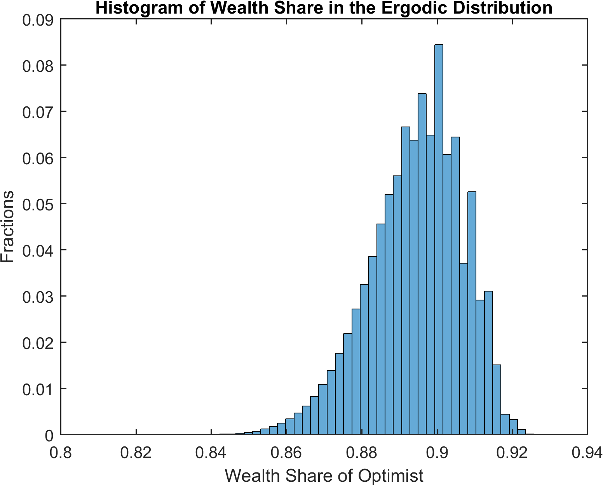

Cao (2018): Speculation and Wealth Distribution under Beliefs Heterogeneity
The models that we have seen so far are models with rational expectations. Our toolbox can be used to solve models without rational expectations. A recent example is Cao (2018).
The Model
The model in Cao (2018) is similar to the one in Heaton and Lucas (1996) with several main differences. First and foremost, the two representative agents might differ in their beliefs on the transition matrix for the exogenous Markov process. Therefore, it departs from the rational expectations assumption. Cao (2018) uses agent index \(i\in \{\text{O},\text{P}\}\), which stands for optimists or pessimists. Second, the agents are subject to a collateral constraint, besides the short-selling constraint:
where \(m\in(0,1)\) denotes the margin requirement when agents purchase stock with leverage.
We use the toolbox to solve the version of the model in Example 4 in Cao (2018) with \(m=0.1\). The constraints imply that wealth shares always lie between \(0\) and \(1\).
The gmod file
The model is solved with Cao2018_HL.gmod
1% Toolbox options
2SIMU_RESOLVE=0;SIMU_INTERP=1;
3
4% Parameters
5parameters beta1 beta2 sigma1 sigma2 shock_trans1 shock_trans2 Tg TP TO ql qh pl ph m eO;
6
7beta1 = 0.95;
8beta2 = 0.95;
9sigma1 = 1.5;
10sigma2 = 1.5;
11m = 0.1;
12
13var_shock d e1 e2 g;
14shock_num = 4;
15d = [0.20 0.20 0.15 0.15];
16g = [0.9904 1.0470 0.9904 1.0470];
17eO = 0.5;
18e1 = eO*ones(1,4); %[0.5 0.5 0.5 0.5];
19e2 = (1-eO)*ones(1,4); %[0.5 0.5 0.5 0.5];
20
21% bounds for asset price
22ql = 1e-10*min(d)*min(beta1/(1-beta1),beta2/(1-beta2));
23qh = max(d)*max(beta1/(1-beta1),beta2/(1-beta2));
24
25pl = 1e-10*min(beta1,beta2);
26ph = 10*max(beta1,beta2);
27
28% States
29var_state W;
30WPts = 1000;
31WMin=0;
32WMax=1;
33W=linspace(WMin,WMax,WPts);
34
35Tg =[0.5885 0.4115;0.4115 0.5885];
36TP = [0.5 0.5;0.5 0.5];
37TO = [0.8 0.2;0.8 0.2];
38
39shock_trans = kron(TP,Tg);
40shock_trans1 = kron(TO,Tg);
41shock_trans2 = shock_trans;
42
43% Tensor variables
44var_tensor budget1 budget2 etotal;
45budget1 = e1+d.*W;
46budget2 = e2+d.*(1-W);
47etotal = e1+e2+d; %etotal = 1
48
49% Endogenous variables, bounds, and initial values
50var_policy p q c1 c2 lambda1 lambda2 mu1 mu2 kp1 a1 a2 Wp[4];
51
52inbound p pl ph adaptive(2);
53inbound q ql qh adaptive(2);
54inbound c1 1e-10 etotal;
55inbound c2 1e-10 etotal;
56inbound kp1 0 1;
57inbound lambda1 0 1;
58inbound lambda2 0 1;
59inbound mu1 0 1;
60inbound mu2 0 1;
61inbound a1 0 1;
62inbound a2 0 1;
63inbound Wp 0.0 1.0;
64
65var_aux bp1 bp2 Rq[4] equity_premium_1 equity_premium_2;
66var_output q p Wp;
67
68var_interp c1Future c2Future qFuture;
69c1Future = c1;
70c2Future = c2;
71qFuture = q;
72
73initial c1Future budget1;
74initial c2Future budget2;
75initial qFuture 0;
76
77model;
78 qp' = qFuture'(Wp')+d';
79 qCC = GDSGE_MIN{qp'*g'};
80 c1p' = c1Future'(Wp');
81 c2p' = c2Future'(Wp');
82
83 % Transform of variable
84 bp1 = m*qCC*a1 - m*qCC*kp1;
85 bp2 = m*qCC*a2 - m*qCC*(1-kp1);
86
87 % Equations in text
88 eq1 = -1 + lambda1 + mu1*m*qCC*p/q+ beta1*GDSGE_EXPECT{qp'*((g')^(1-sigma1))*((c1p')^(-sigma1))| shock_trans1}/(q*(c1^(-sigma1)));
89 eq2 = -1 + mu1 + beta1*GDSGE_EXPECT{((g')^(-sigma1))*((c1p')^(-sigma1))| shock_trans1}/(p*(c1^(-sigma1)));
90 eq3 = lambda1*kp1;
91 eq4 = mu1*a1;
92 eq5 = -1 + lambda2 + mu2*m*qCC*p/q+beta2*GDSGE_EXPECT{qp'*((g')^(1-sigma2))*((c2p')^(-sigma2))| shock_trans2}/(q*(c2^(-sigma2)));
93 eq6 = -1 + mu2 + beta2*GDSGE_EXPECT{((g')^(-sigma2))*((c2p')^(-sigma2))| shock_trans2}/(p*(c2^(-sigma2)));
94 eq7 = lambda2*(1-kp1);
95 eq8 = mu2*a2;
96
97 % market clear
98 mc = 1-a1-a2;
99
100 equity_premium_1 = GDSGE_EXPECT{(qp')/q*g' | shock_trans1} - 1/p;
101 equity_premium_2 = GDSGE_EXPECT{(qp')/q*g' | shock_trans2} - 1/p;
102
103 % Consistency
104 consis' = (qp'*kp1+bp1/g') / qp' - Wp';
105
106 Rq' = qp'*g'/q;
107 equations;
108 1 - ((q+d)*W + e1 - q*kp1 - p*bp1)/c1;
109 1 - ((q+d)*(1-W) + e2 - q*(1-kp1) - p*bp2)/c2;
110 eq1;
111 eq2;
112 eq3;
113 eq4;
114 eq5;
115 eq6;
116 eq7;
117 eq8;
118 mc;
119 consis';
120 end;
121end;
122
123simulate;
124 num_samples = 100;
125 num_periods = 10000;
126 initial W 0.5
127 initial shock 1;
128 var_simu q p;
129 W'= Wp';
130end;
This should look familiar if you already saw the Heaton and Lucas (1996) example (our toolbox algorithm to solve their model is also different from their original algorithm). The new element of the model, heterogeneous belief, is incorporated in the following two lines
89 eq2 = -1 + mu1 + beta1*GDSGE_EXPECT{((g')^(-sigma1))*((c1p')^(-sigma1))| shock_trans1}/(p*(c1^(-sigma1)));
93 eq6 = -1 + mu2 + beta2*GDSGE_EXPECT{((g')^(-sigma2))*((c2p')^(-sigma2))| shock_trans2}/(p*(c2^(-sigma2)));
As shown, the GDSGE_EXPECT function takes an optional argument following operator | to explicitly specify the transition matrix (with the default option given by shock_trans). In the current example, the transition matrix used by the optimists and pessimists are defined in shock_trans1 and shock_trans2, respectively. Notice shock_trans1 and shock_trans2 need to be explicitly declared as parameters to be used in the model block.
Results
The following figure shows the equity premium as perceived by the optimists and the pessimists. The optimists believe that the likelihood of high dividend payment is higher than the pessimists do. Therefore, the optimists’ perceived equity premium is always higher, and they borrow from the pessimists to invest in stock.

In the ergodic distribution of wealth share in the following figure, using the pessimists’ beliefs as the correct beliefs, the optimists own large fractions of total wealth despite the fact that their beliefs are incorrect (because return to equity is higher than return to bond when the optimists’ wealth share is relatively low).
{kind=link}